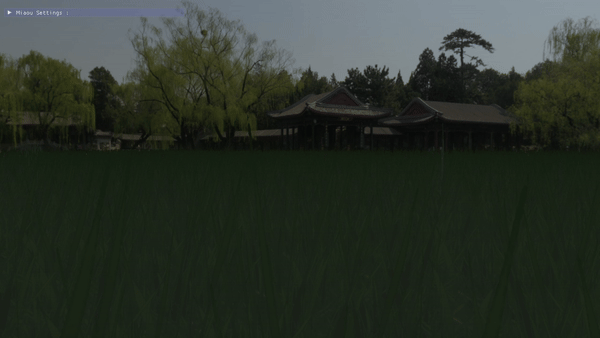
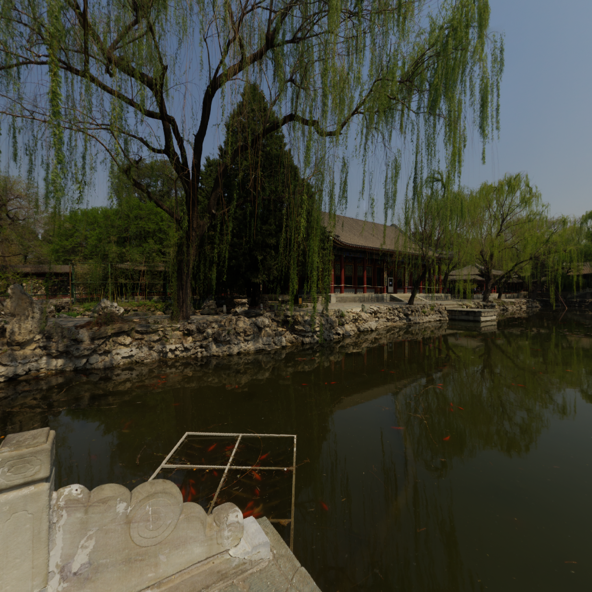
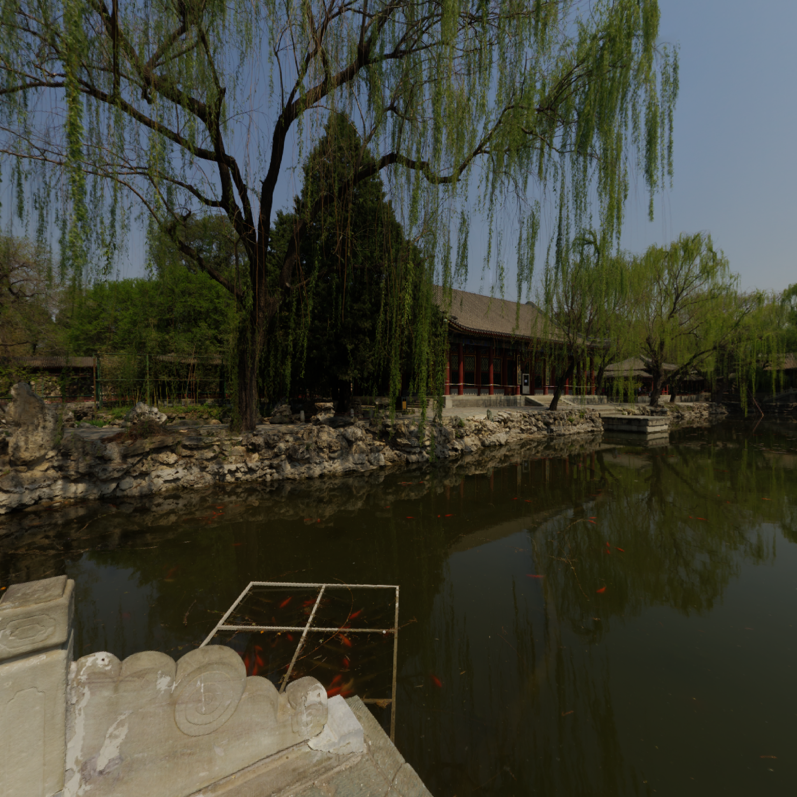

In order to optimize, instead of drawing a mesh 4000 times that draws a clump of grass.
I store all the position values of my meshes to make a single draw call for my 4000 elements.
I also tried to add a wind movement effect through the vertex buffer.
~~~~~~~~~~~~~~~~~~~~~~~~~~~~~~~~~ glm::mat4* modelMatrices; ... for (unsigned int zIndex = 0; zIndex < amount_; zIndex++) { for (unsigned int xIndex = 0; xIndex < amount_; xIndex++) { glm::mat4 model = glm::mat4(1.0f); ... model = glm::translate(model, glm::vec3(x, y, z)); modelMatrices[i] = model; i++; } } ~~~~~~~~~~~~~~~~~~~~~~~~~~~~~~~~~

I store all the position values of my meshes to make a single draw call for my 4000 elements.
I also tried to add a wind movement effect through the vertex buffer.
~~~~~~~~~~~~~~~~~~~~~~~~~~~~~~~~~ glm::mat4* modelMatrices; ... for (unsigned int zIndex = 0; zIndex < amount_; zIndex++) { for (unsigned int xIndex = 0; xIndex < amount_; xIndex++) { glm::mat4 model = glm::mat4(1.0f); ... model = glm::translate(model, glm::vec3(x, y, z)); modelMatrices[i] = model; i++; } } ~~~~~~~~~~~~~~~~~~~~~~~~~~~~~~~~~

 
